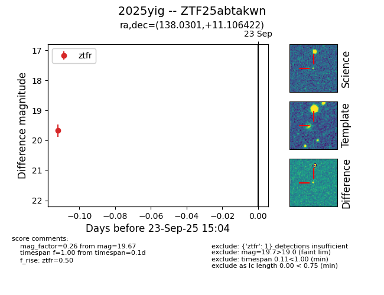

FINK: ZTF25abtakwn
Lasair: ZTF25abtakwn
ALeRCE: ZTF25abtakwn
TNS: 2025yig
YSE: 2025yig
ZTF25abtakwn (ztf,fink)
2025yig (tns,yse)
equatorial (ra, dec) = (138.0301,+11.10642)
galactic (l, b) = (219.0722,+36.21954)

last ztfr=19.67
1 ztfr detections